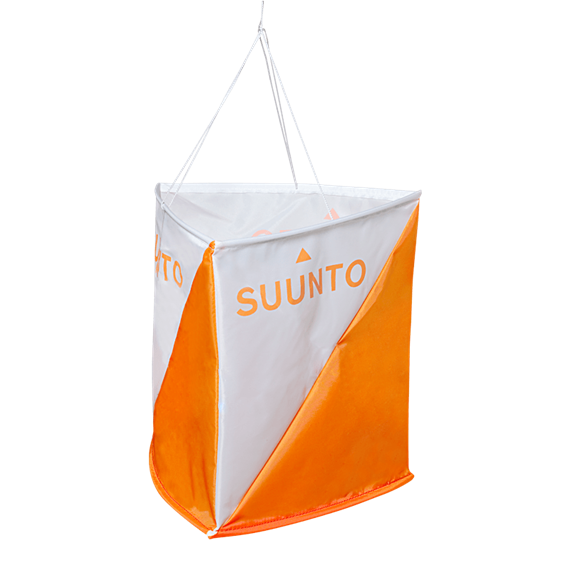
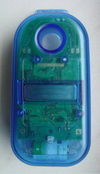
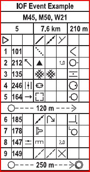

What Is Orienteering?
Orienteering is a competitive international sport that combines racing with navigation. It is a timed race in which individual participants use a specially created, highly detailed map to select routes and navigate through diverse and often unfamiliar terrain and visit control points in sequence. Courses also can be enjoyed as a walk in the woods, with difficulty levels from beginner to expert offered at most events.
A standard orienteering course consists of a start, a series of control sites that are marked by circles, connected by lines and numbered in the order they are to be visited, and a finish. The control site circles are centered on the feature that is to be found; this feature is also defined by control descriptions (sometimes called clues, right), a list of which you'll receive along with your map, or printed on your map. Out in the terrain, a control flag (below) marks the location that the orienteer must visit.
To verify a visit, the orienteer may use a punch hanging next to the flag to mark his or her control card. Different punches make different patterns of holes in the paper. Many clubs now use electronic "punching" instead, using a finger stick with a chip inside it that records your time at each control you visit (one standard electronic control station is depicted below right).
The route between "controls" is not specified, and is entirely up to the orienteer; this element of route choice and the ability to navigate through the forest are the essence of orienteering.
Most orienteering events use staggered starts to ensure that each orienteer has a chance to do his or her own navigating, but there are several other popular formats, including relays, mass-start endurance events, and "Score-O" events in which the orienteer must find as many controls as possible within a specified time (rogaine is an endurance version of score-O).
Originally a training exercise in land navigation for military officers in Scandinavia (See "A brief history," below), orienteering has developed many variations. Among these, the oldest and the most popular is so-called foot orienteering--this refers to orienteering while running or walking on foot. Typically, when people use the term orienteering, this is what they're referring to. But now people also orienteer on skis, mountain bikes--even in canoes!
Orienteering Sports
- Canoe Orienteering
- Car Orienteering
- Foot Orienteering
- Mountain Bike Orienteering
- Mauntain Marathoning
- Mounted Orienteering
- Radio Orienteering
- Rogaining
- Ski-orienteering
- SportLabyrinth
- Trail Orienteering
Source; OrienteeringUSA,Wikipedia